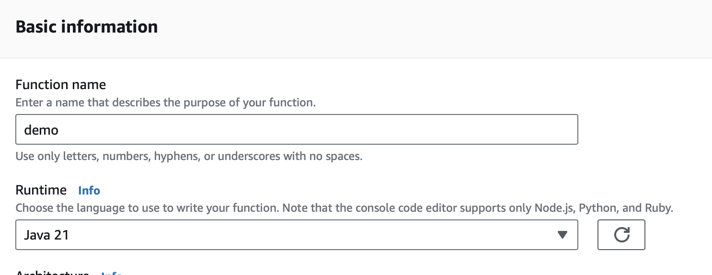
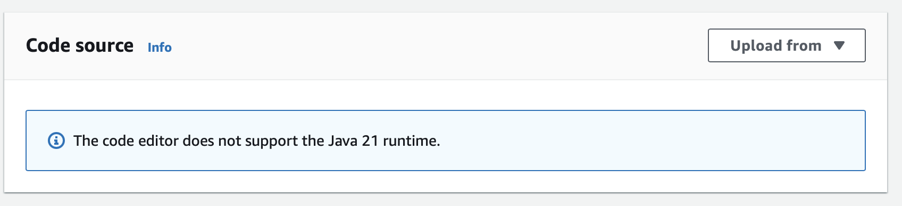
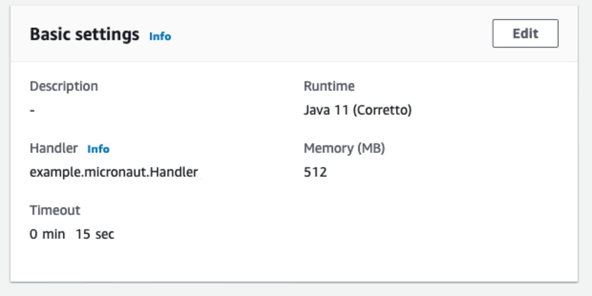

mn create-function-app example.micronaut.micronautguide --features=aws-lambda --build=gradle --lang=javaSecret Rotation AWS Lambda and Secrets Manager
Learn how to create an AWS Lambda function with the Micronaut framework to rotate a secret stored in AWS Secrets Manager
Authors: Sergio del Amo
Micronaut Version: 4.10.9
1. Getting Started
In this guide, we will create a Micronaut application written in Java.
2. What you will need
To complete this guide, you will need the following:
-
Some time on your hands
-
A decent text editor or IDE (e.g. IntelliJ IDEA)
-
JDK 21 or greater installed with
JAVA_HOMEconfigured appropriately
3. Solution
We recommend that you follow the instructions in the next sections and create the application step by step. However, you can go right to the completed example.
-
Download and unzip the source
4. Writing the App
Create an application using the Micronaut Command Line Interface or with Micronaut Launch.
If you don’t specify the --build argument, Gradle with the Kotlin DSL is used as the build tool. If you don’t specify the --lang argument, Java is used as the language.If you don’t specify the --test argument, JUnit is used for Java and Kotlin, and Spock is used for Groovy.
|
If you use Micronaut Launch, select serverless function as application type and add aws-lambda feature.
The previous command creates a Micronaut application with the default package example.micronaut in a directory named micronautguide.
4.1. Delete Sample Code
Micronaut Launch generates some sample code by default. Delete the following files:
-
src/main/java/example/micronaut/Book.java -
src/main/java/example/micronaut/BookRequest.java -
src/main/java/example/micronaut/BookSaved.java -
src/test/java/example/micronaut/BookRequestHandlerTest.java
5. Code
This guide is complementary to:
5.1. JSON Web Key Generation
Create an interface to encapsulate the contract to generate a JWK (JSON Web Key)
src/main/java/example/micronaut/JsonWebKeyGenerator.java
package example.micronaut;
import io.micronaut.core.annotation.NonNull;
import io.micronaut.core.annotation.Nullable;
import java.util.Optional;
/**
* <a href="https://datatracker.ietf.org/doc/html/rfc7517">JSON Web Key</a>
*/
public interface JsonWebKeyGenerator {
@NonNull
Optional<String> generateJsonWebKey(@Nullable String kid);
}To generate a JWK, use Nimbus JOSE + JWT, an open source Java library to generate JSON Web Tokens (JWT).
Add the following dependency:
build.gradle
implementation("com.nimbusds:nimbus-jose-jwt:9.40")Create an implementation of JsonWebKeyGenerator
src/main/java/example/micronaut/RS256JsonWebKeyGenerator.java
package example.micronaut;
import com.nimbusds.jose.JOSEException;
import com.nimbusds.jose.JWSAlgorithm;
import com.nimbusds.jose.jwk.KeyUse;
import com.nimbusds.jose.jwk.gen.RSAKeyGenerator;
import io.micronaut.core.annotation.NonNull;
import io.micronaut.core.annotation.Nullable;
import org.slf4j.Logger;
import org.slf4j.LoggerFactory;
import jakarta.inject.Singleton;
import java.util.Optional;
import java.util.UUID;
@Singleton (1)
public class RS256JsonWebKeyGenerator implements JsonWebKeyGenerator {
private static final Logger LOG = LoggerFactory.getLogger(RS256JsonWebKeyGenerator.class);
@Override
@NonNull
public Optional<String> generateJsonWebKey(@Nullable String kid) {
try {
return Optional.of(new RSAKeyGenerator(2048)
.algorithm(JWSAlgorithm.RS256)
.keyUse(KeyUse.SIGNATURE) // indicate the intended use of the key
.keyID(kid != null ? kid : generateKid()) // give the key a unique ID
.generate()
.toJSONString());
} catch (JOSEException e) {
LOG.warn("unable to generate RS256 key", e);
}
return Optional.empty();
}
private String generateKid() {
return UUID.randomUUID().toString().replaceAll("-", "");
}
}| 1 | Use jakarta.inject.Singleton to designate a class as a singleton. |
5.2. Micronaut AWS Secrets manager dependency
Add the next dependency:
build.gradle
implementation("io.micronaut.aws:micronaut-aws-secretsmanager")5.3. Rotation Steps
AWS Secrets Manager defines several steps to allow for different rotation scenarios.
Create an enum to encapsulate those steps:
src/main/java/example/micronaut/SecretsManagerRotationStep.java
package example.micronaut;
import io.micronaut.core.annotation.NonNull;
import java.util.Collections;
import java.util.Map;
import java.util.Optional;
import java.util.HashMap;
public enum SecretsManagerRotationStep {
CREATE_SECRET("createSecret"),
SET_SECRET("setSecret"),
TEST_SECRET("testSecret"),
FINISH_SECRET("finishSecret");
private static final Map<String, SecretsManagerRotationStep> ENUM_MAP;
static {
Map<String, SecretsManagerRotationStep> map = new HashMap<>();
for (SecretsManagerRotationStep instance : SecretsManagerRotationStep.values()) {
map.put(instance.toString(), instance);
}
ENUM_MAP = Collections.unmodifiableMap(map);
}
private final String step;
SecretsManagerRotationStep(String step) {
this.step = step;
}
@Override
public String toString() {
return this.step;
}
@NonNull
public static Optional<SecretsManagerRotationStep> of(@NonNull String step) {
return Optional.ofNullable(ENUM_MAP.get(step));
}
}5.4. Handler
Add the following dependency to subscribe to SecretsManagerRotationEvent:
build.gradle
implementation("com.amazonaws:aws-lambda-java-events")Create a Handler that leverages the Micronaut framework’s DI engine to inject its collaborators.
src/main/java/example/micronaut/FunctionRequestHandler.java
package example.micronaut;
import com.amazonaws.services.lambda.runtime.events.SecretsManagerRotationEvent;
import com.fasterxml.jackson.core.JsonProcessingException;
import io.micronaut.aws.distributedconfiguration.KeyValueFetcher;
import io.micronaut.core.annotation.Introspected;
import io.micronaut.core.annotation.NonNull;
import io.micronaut.function.aws.MicronautRequestHandler;
import io.micronaut.json.JsonMapper;
import org.slf4j.Logger;
import org.slf4j.LoggerFactory;
import software.amazon.awssdk.services.secretsmanager.SecretsManagerClient;
import software.amazon.awssdk.services.secretsmanager.model.PutSecretValueRequest;
import jakarta.inject.Inject;
import java.io.IOException;
import java.util.HashMap;
import java.util.Map;
import java.util.Objects;
import java.util.Optional;
@Introspected
public class FunctionRequestHandler
extends MicronautRequestHandler<SecretsManagerRotationEvent, Void> { (1)
private static final Logger LOG = LoggerFactory.getLogger(FunctionRequestHandler.class);
private static final String JWK_PRIMARY = "jwk.primary";
private static final String JWK_SECONDARY = "jwk.secondary";
@Inject
public JsonWebKeyGenerator jsonWebKeyGenerator; (2)
@Inject
public JsonMapper objectMapper; (3)
@Inject
public SecretsManagerClient secretsManagerClient; (4)
@Inject
public KeyValueFetcher keyValueFetcher; (5)
@Override
public Void execute(SecretsManagerRotationEvent input) {
LOG.info("step {} secretId: {}", input.getStep(), input.getSecretId());
SecretsManagerRotationStep.of(input.getStep()).ifPresent(step -> {
if (step == SecretsManagerRotationStep.FINISH_SECRET) {
currentPrimary(input.getSecretId())
.flatMap(this::generateSecretString)
.ifPresent(secretString -> updateSecretString(input, secretString));
}
});
return null;
}
@NonNull
private Optional<String> currentPrimary(@NonNull String secretId) { (6)
return keyValueFetcher.keyValuesByPrefix(secretId)
.filter(m -> m.containsKey(JWK_PRIMARY))
.map(m -> m.get(JWK_PRIMARY))
.filter(Objects::nonNull)
.map(Object::toString);
}
@NonNull
private Optional<String> generateSecretString(@NonNull String currentPrimary) { (7)
Optional<String> jsonJwkOptional = jsonWebKeyGenerator.generateJsonWebKey(null);
if (!jsonJwkOptional.isPresent()) {
return Optional.empty();
}
String jsonJwk = jsonJwkOptional.get();
Map<String, String> newJwk = new HashMap<>();
newJwk.put(JWK_PRIMARY, jsonJwk);
newJwk.put(JWK_SECONDARY, currentPrimary);
try {
return Optional.of(objectMapper.writeValueAsString(newJwk));
} catch (JsonProcessingException e) {
LOG.warn("JsonProcessingException", e);
} catch (IOException e) {
LOG.warn("IOException", e);
}
return Optional.empty();
}
private void updateSecretString(@NonNull SecretsManagerRotationEvent input,
@NonNull String secretString) { (8)
secretsManagerClient.putSecretValue(PutSecretValueRequest.builder()
.clientRequestToken(input.getClientRequestToken())
.secretId(input.getSecretId())
.secretString(secretString)
.build());
}
}| 1 | Use SecretsManagerRotationEvent as input. |
| 2 | Inject JsonWebKeyGenerator to generate the new JWK |
| 3 | Inject the Jackson Object Mapper to serialize the secret value as a JSON String. |
| 4 | Use SecretsManagerClient to push a new secret’s value. |
| 5 | Use KeyValueFetcher to fetch the current secret contents. |
| 6 | Finds the current secret primary key |
| 7 | Generates the new secret content. A JSON object serialized as a String. |
| 8 | Updates the secret value with AWS SDK. |
6. Lambda
Create a Lambda Function. As a runtime, select Java 17, Java 21, or Java 25.

6.1. IAM Role Policies
Add a Policy to the IAM role associated with the Lambda function:
{
"Version": "2012-10-17",
"Statement": [
{
"Sid": "VisualEditor0",
"Effect": "Allow",
"Action": [
"secretsmanager:GetSecretValue",
"secretsmanager:DescribeSecret",
"secretsmanager:PutSecretValue",
"secretsmanager:UpdateSecretVersionStage"
],
"Resource": "*",
"Condition": {
"StringEquals": {
"secretsmanager:resource/AllowRotationLambdaArn": "XXXXXX"
}
}
},
{
"Sid": "VisualEditor1",
"Effect": "Allow",
"Action": "secretsmanager:GetRandomPassword",
"Resource": "*"
}
]
}6.2. Resource Based policy
In Lambda (Configuration → Permissions) add a resource-based policy, such as:

6.3. Upload Code
Create an executable jar including all dependencies:
./gradlew shadowJarUpload it:

6.4. Handler
As Handler, set:
example.micronaut.Handler

You can trigger a rotation immediately within the AWS Console:

The lambda function is invoked four times. One per step. Your secret should rotate successfully.
7. Next Steps
Explore more features with Micronaut Guides.
Check the guides:
8. Help with the Micronaut Framework
The Micronaut Foundation sponsored the creation of this Guide. A variety of consulting and support services are available.
9. License
| All guides are released with an Apache license 2.0 license for the code and a Creative Commons Attribution 4.0 license for the writing and media (images…). |